CameraHMR refinement — heatmap report (tuned λ=1.0, λ_rot=0.003)
Columns: image | CameraHMR before(red) | refined after(green) | GT(blue) | DensePose IUV | location-loss on mesh (reproj px, 0→25) | rotation-loss on mesh (geodesic°, 0→45). Loss is painted per-face on the CameraHMR baseline mesh (turbo: blue=low, red=high); grey/unpainted = no correspondence.
Top 10% — refinement HELPS most (ΔMPJPE)
imageFiles/downtown_runForBus_01/image_00767.jpg pts=400 ΔMPJPE -120.3 (base MPJPE 330.8 → refined 210.5)
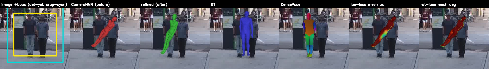
imageFiles/downtown_bar_00/image_00079.jpg pts=400 ΔMPJPE -24.8 (base MPJPE 104.0 → refined 79.2)
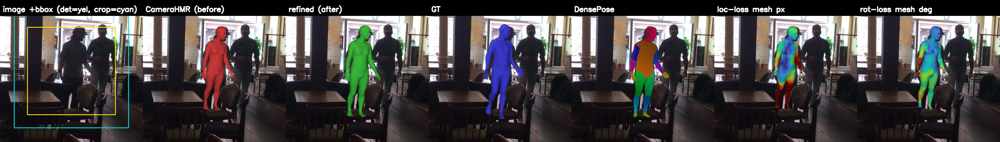
imageFiles/downtown_upstairs_00/image_00360.jpg pts=400 ΔMPJPE -18.7 (base MPJPE 92.0 → refined 73.3)
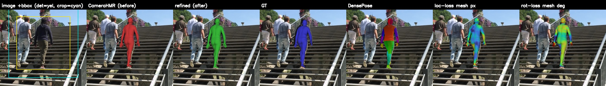
imageFiles/downtown_car_00/image_00365.jpg pts=400 ΔMPJPE -15.6 (base MPJPE 105.0 → refined 89.4)
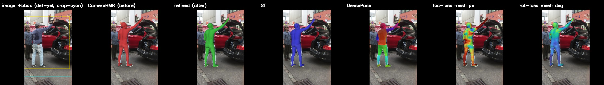
imageFiles/downtown_rampAndStairs_00/image_00242.jpg pts=400 ΔMPJPE -13.1 (base MPJPE 67.3 → refined 54.2)
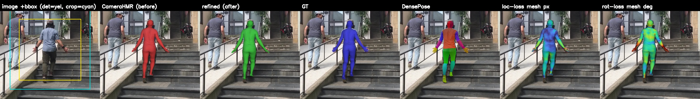
imageFiles/downtown_weeklyMarket_00/image_00369.jpg pts=400 ΔMPJPE -11.5 (base MPJPE 91.1 → refined 79.7)
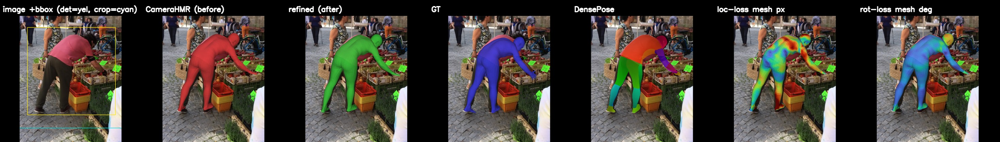
imageFiles/downtown_upstairs_00/image_00144.jpg pts=400 ΔMPJPE -10.4 (base MPJPE 57.6 → refined 47.2)
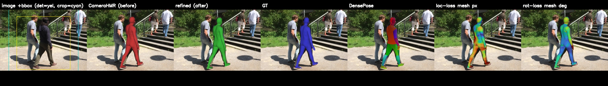
imageFiles/downtown_rampAndStairs_00/image_00147.jpg pts=400 ΔMPJPE -9.6 (base MPJPE 61.1 → refined 51.5)
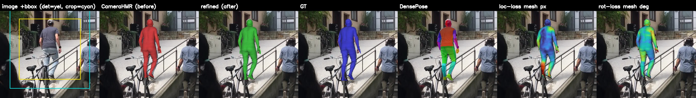
imageFiles/downtown_sitOnStairs_00/image_00981.jpg pts=400 ΔMPJPE -8.9 (base MPJPE 121.3 → refined 112.4)
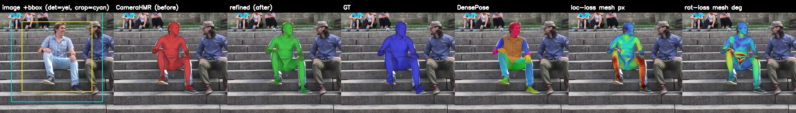
imageFiles/downtown_runForBus_00/image_00219.jpg pts=400 ΔMPJPE -8.3 (base MPJPE 47.5 → refined 39.2)
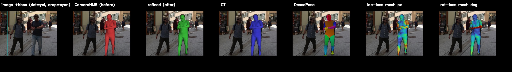
imageFiles/downtown_walking_00/image_01100.jpg pts=400 ΔMPJPE -7.8 (base MPJPE 60.2 → refined 52.4)
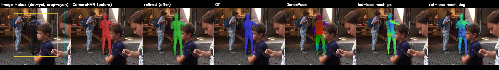
imageFiles/downtown_car_00/image_00209.jpg pts=400 ΔMPJPE -7.4 (base MPJPE 130.7 → refined 123.3)
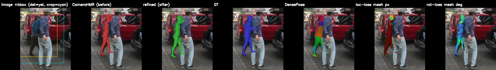
Bottom 10% — refinement HURTS most (ΔMPJPE)
imageFiles/downtown_windowShopping_00/image_00506.jpg pts=269 ΔMPJPE +134.1 (base MPJPE 59.0 → refined 193.2)
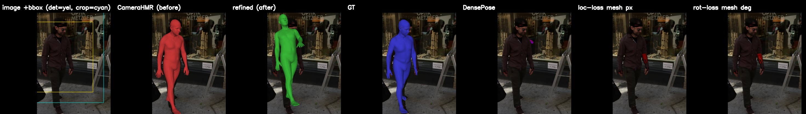
imageFiles/downtown_runForBus_01/image_00555.jpg pts=400 ΔMPJPE +15.8 (base MPJPE 88.3 → refined 104.1)
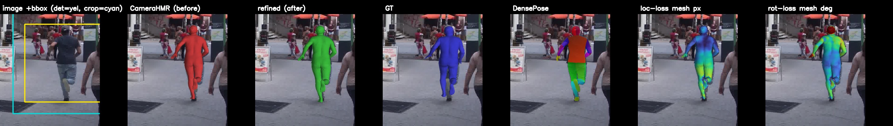
imageFiles/downtown_bar_00/image_00802.jpg pts=400 ΔMPJPE +11.2 (base MPJPE 76.4 → refined 87.5)
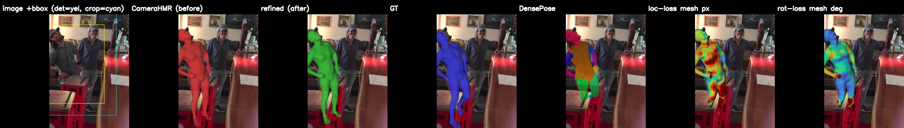
imageFiles/downtown_bar_00/image_00658.jpg pts=400 ΔMPJPE +9.5 (base MPJPE 56.6 → refined 66.2)
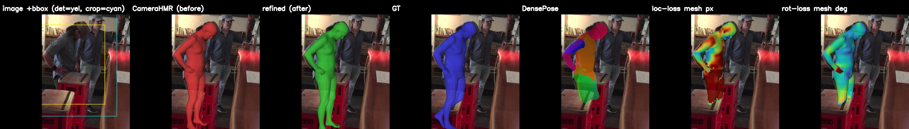
imageFiles/downtown_downstairs_00/image_00237.jpg pts=400 ΔMPJPE +8.2 (base MPJPE 43.8 → refined 52.0)
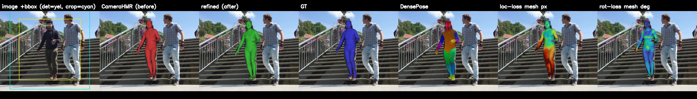
imageFiles/downtown_weeklyMarket_00/image_00218.jpg pts=400 ΔMPJPE +7.5 (base MPJPE 49.1 → refined 56.6)
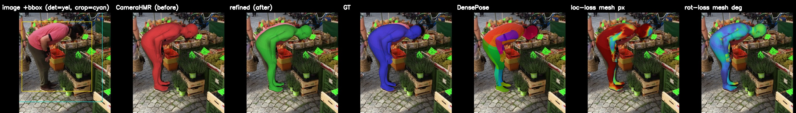
imageFiles/downtown_weeklyMarket_00/image_00764.jpg pts=400 ΔMPJPE +6.8 (base MPJPE 55.7 → refined 62.5)
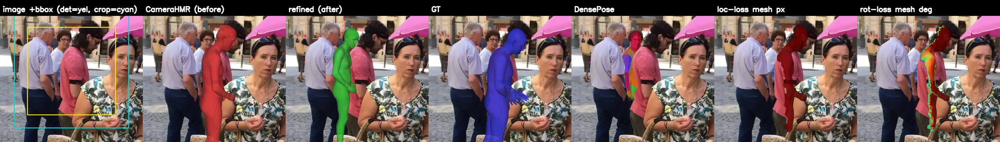
imageFiles/downtown_upstairs_00/image_00640.jpg pts=400 ΔMPJPE +6.2 (base MPJPE 24.0 → refined 30.2)
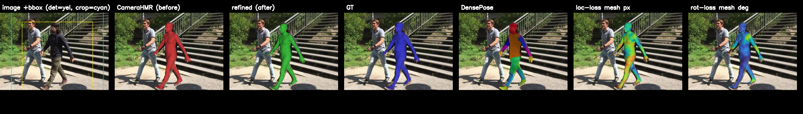
imageFiles/downtown_warmWelcome_00/image_00067.jpg pts=400 ΔMPJPE +5.7 (base MPJPE 81.6 → refined 87.3)
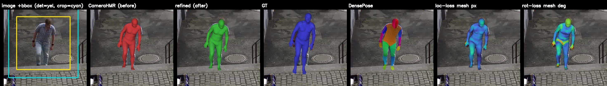
imageFiles/downtown_runForBus_01/image_00610.jpg pts=400 ΔMPJPE +5.3 (base MPJPE 113.4 → refined 118.8)
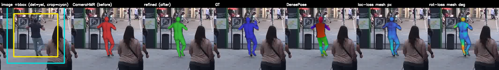
imageFiles/downtown_bar_00/image_00581.jpg pts=400 ΔMPJPE +5.0 (base MPJPE 60.6 → refined 65.6)
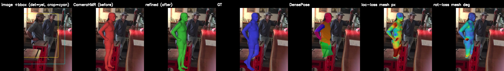
imageFiles/downtown_runForBus_01/image_00414.jpg pts=400 ΔMPJPE +4.7 (base MPJPE 86.5 → refined 91.2)
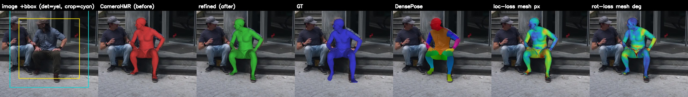